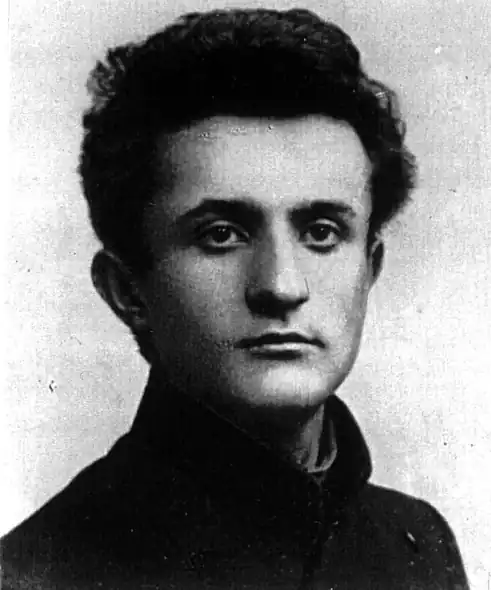

Давид ГОФШТЕЙН
Гофштейн Давид Наумович народився 25 липня 1889 року в Коростишеві на Житомирщині в сім'ї дрібного службовця. Навчався в хедері. Рано покинувши отчий дім, переїхав до Києва, де вступив до комерційного інституту. Одночасно слухав лекції на філологічному факультеті університету.
Перші вірші опублікував 1912 року в єврейській газеті "Айє цайт", де працював коректором, Багато років учителював. Був редактором. У роки війни працював в об'єднаному інституті суспільних наук АН УРСР. Член СП СРСР з 1934 року Давид Гофштейн — один з основоположників єврейської радянської поезії. Його перу належать численні книжки віршів і поем: "Дороги"? "Лірика", "Вибрані вірші", "Вірші та поеми", "Київ", "Україна", "У наші грізні дні". Він був найкращим перекладачем української класичної та радянської поезії єврейською мовою. Переклав твори Т. Шевченка, І. Франка, Лесі Українки, М. Рильського, П. Тичини, В. Сосюри, Л. Первомайського, М. Бажана, а також класиків світової літератури. Він автор низки підручників і укладач збірників народних пісень. 16 вересня 1948 року Д. Гофштейна заарештували у так званій "Справі Єврейського антифашистського комітету". Йому інкримінували націоналістичну діяльність, зрадництво, шпигунство. Близько чотирьох років тривало слідство із залученням найнятих літературних критиків-"експертів" (В. Щербина. Ю. Лукін, Г. Владикін, С. Євгенов), які кваліфікували вірші, нариси, оповідання та інші матеріали, котрі антифашистський Комітет відправляв за кордон через Радіоінформбюро в органи інформації, як зловорожі радянському ладові, шпигунські. 28 липня 1952 року військова колегія Верховного суду СРСР оголосила вирок Д. Гофштейнові і ще дванадцятьом єврейським письменникам: найвища міра покарання — розстріл. Вирок виконано 12 серпня 1952 року. Давид Гофштейн реабілітований посмертно. Григорій Полянкер ЛУ 29 (4438) 19.07.1991